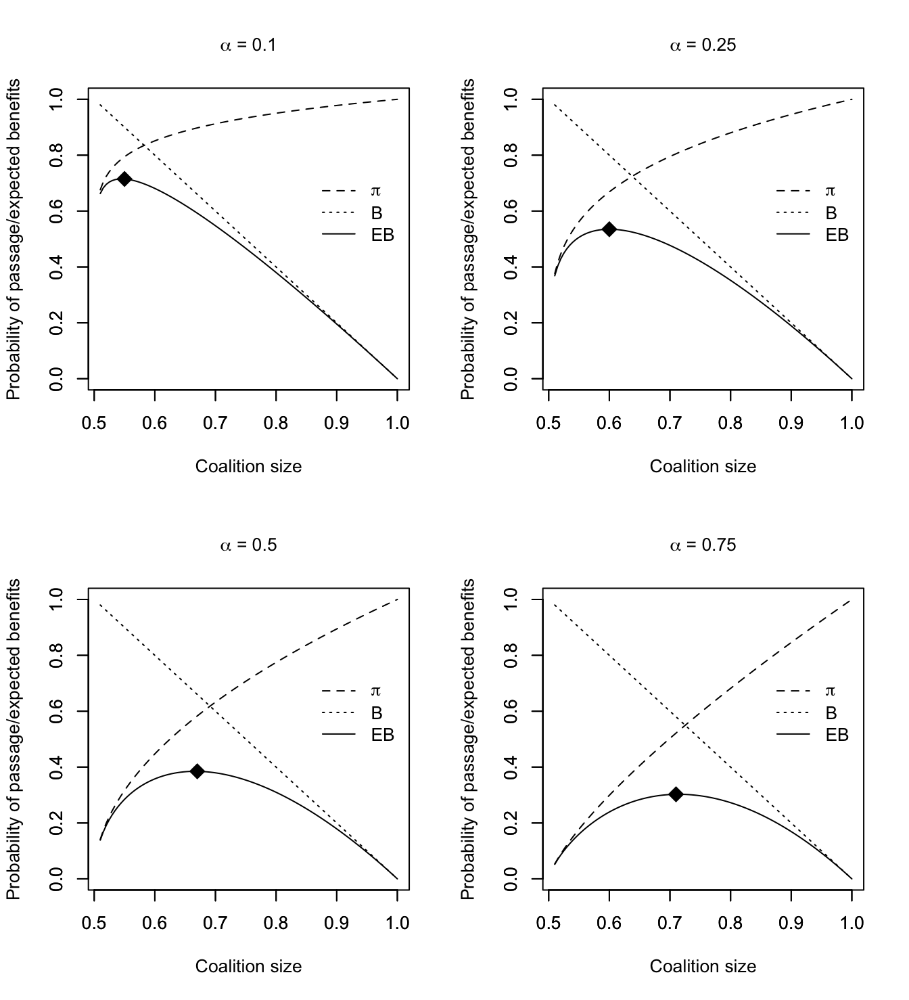
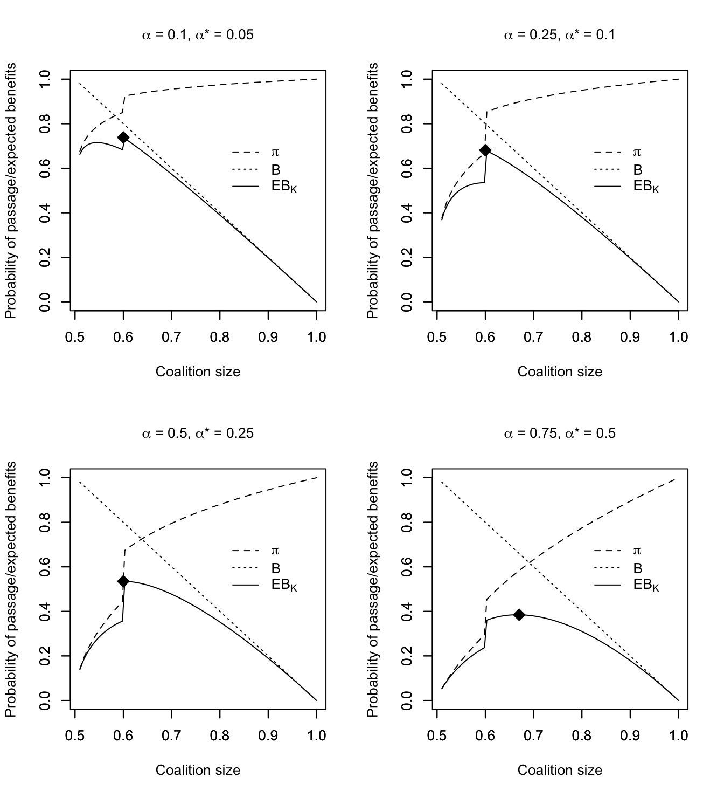

![]()

Redesigning the Filibuster for More Effective Lawmaking in a Polarized Senate
Abstract
In today’s hyper-partisan political environment, it is a common complaint that Congress is broken. This is especially true for the Senate, where the filibuster and cloture rule have created a de facto requirement for a 60-vote supermajority to pass almost any legislation, sparking widespread calls from activists and senators alike to reform or even abolish the filibuster.
In this paper, I predict the effects of different proposals for the filibuster and cloture rule on a set of “legislative goods,” including productivity, bipartisanship, and policy stability. I test the effects of a series of filibuster rule proposals on these legislative goods, including proposals much more creative than the “nuclear option.”
To predict the effects of these rule changes, I extend Wawro and Schickler’s expected-utility model of legislative entrepreneurship under cloture by considering the costs faced by bill proponents and obstructionists alike. Using this model, which excels at explaining the evolution of past filibuster fights, I predict the outcomes of legislative battles under different filibuster rules. The results will inform activists and senators in future debates over filibuster reform — which will inevitably return the next time a popular bill is stymied by the Senate’s supermajoritarian rules.
Keywords
U.S. Senate, legislative obstruction, filibuster, cloture
1 Introduction
In today’s hyper-partisan political environment, it is a common complaint that Congress is broken. This is especially true for the Senate, where the filibuster and cloture rule have created a de facto requirement for a 60-vote supermajority to pass almost any legislation, sparking widespread calls from activists and senators alike to reform or even abolish the filibuster.
In this paper, I predict the effects of different proposals for the filibuster and cloture rule on a set of “legislative goods,” including productivity, bipartisanship, and policy stability. I test the effects of three proposed filibuster rules: abolishing the filibuster, restoring the talking filibuster, and flipping the cloture vote.
To predict the effects of these rule changes, I extend Wawro and Schickler’s expected-utility model of legislative entrepreneurship under cloture by considering the costs faced by bill proponents and obstructionists alike. These extensions unlock the ability to predict the winner of legislative fights by comparing the expected utility of the proponent and obstructionist factions. Via this expected utility analysis, I find that restoring the talking filibuster does the best job of balancing the three legislative goods, supporting the ideas of leading advocates of filibuster reform such as Sen. Jeff Merkley.
2 Literature Review
Research on the filibuster falls under the broader research area of parties, partisanship, and polarization in Congress. Much of the existing research on the filibuster aims to explain the evolution of the tactic and model the effect of the current and previous filibuster and cloture rules on legislative conflicts. I extend this research by applying formal modeling techniques to predict the effects of proposed new Senate rules around the filibuster and identify the best rule proposal for improving the functioning of the Senate.
2.1 History of the Filibuster
The modern practice of the filibuster is the product of a long history of evolutions and changes to the Senate’s rules and norms. Understanding the modern filibuster, and how new filibuster rules could change the Senate, therefore requires an understanding of this history.
The rules of the first Congress were naturally heavily influenced by the ideas of the Framers of the Constitution. There was a broad consensus among the Framers that majority rule was the best way for a legislature to operate. The Framers had seen firsthand how the supermajority voting rule of the Confederation Congress had debilitated the federal government under the Articles of Confederation (Coenen, 2012, p. 1140). Roger Sherman remarked that “to require more than a majority to decide a question was always embarrassing” (Farrand, 1911, p. 450). In Federalist 22, Hamilton (1787) wrote of requiring a supermajority for legislation:
This is one of those refinements which, in practice, has an effect the reverse of what is expected from it in theory. The necessity of unanimity in public bodies, or of something approaching towards it, has been founded upon a supposition that it would contribute to security. But its real operation is to embarrass the administration, to destroy the energy of the government, and to substitute the pleasure, caprice, or artifices of an insignificant, turbulent, or corrupt junto, to the regular deliberations and decisions of a respectable majority.
The Framers agreed that the Senate was intended to be a majority-rule institution for all except the most consequential matters, such as impeachment and Constitutional amendments (Jentleson, 2022, p. 27). Thus, the Senate indeed functioned as a majoritarian institution. Members of the minority could have their say in debate, but in the end, questions would be decided with a majority vote. This principle of majority rule was mostly enforced by a set of norms, sometimes called the Senate Code, not written rules. In fact, the Senate rules originally included the previous question motion, which sets up a vote to end debate and immediately move to a final passage vote. The previous question motion is still part of the House rules, and is a regular step in passing legislation in the House. The Senate, however, removed the previous question from the rules in 1806, believing that the formal rule was unnecessary in light of the Senate’s strong norms against superfluous debate (Jentleson, 2022, p. 47).
The Senate operated as a majoritarian body according to the Senate Code with few exceptions in the 19th century. The event many histories mark as the first origins of the modern filibuster occurred in 1841. In opposition of a Whig bill to re-establish the Bank of the United States, Sen. John Calhoun (D–SC) organized a group of slave-state Democratic senators to make one floor speech after another and stall the bill. After weeks of this obstruction, Sen. Henry Clay (Whig–KY), the lead proponent of the bank bill, threatened to change the rules to restore the previous question motion. Calhoun erupted at the prospect of the Senate imposing limitations on debate, invoking the principle of minority rights to defend the right he claimed to unlimited debate (Jentleson, 2022, p. 52). These principles of minority rights and unlimited debate, first applied by Calhoun, have been central to defenses of the filibuster ever since.
A formal rule for ending debate in the Senate finally came in 1917. At the end of the congressional session, a group of antiwar senators successfully killed a bill to arm American ships for protection during the First World War. President Woodrow Wilson condemned the actions of this “little group of willful men” and the rules of the Senate that allowed it (“Text of the President’s Statement,” 1917). Wilson sparked massive public outcry, and the Senate came back into session to pass the armed ships bill and a cloture rule to prevent similar obstruction in the future. The senators settled on a rule by which a two-thirds vote of present and voting senators could end debate. This was the original version of Rule XXII, which governs the filibuster and cloture today. The two-thirds supermajority was a compromise by the rule’s supporters, who largely wanted a simple majority cloture rule, so that the cloture rule’s opponents would allow it to pass (Examining the Filibuster, 2010, p. 18, testimony of Sarah A. Binder).
Even after the introduction of a cloture rule, the Senate still operated mainly on the norm of restraint in debate. As shown in Figure 1 below, the cloture rule was used only on rare occasions for the first several decades after 1917 (United States Senate, 2024).
The Senate was able to pass legislation without using the cloture rule, with the exception of civil rights bills, which were frequently and systematically filibustered. Southern Democratic senators successfully killed nine of the 12 civil rights bills considered in the Senate between 1901 and 1956 with filibusters (Koger, 2010, p. 116). The longest speech in Senate history, a continuous speech of over 24 hours by Sen. Strom Thurmond (D–SC) came in protest of the 1957 Civil Rights Act, which ultimately passed despite the filibuster. Then-Majority Leader Lyndon Johnson (D–TX) threatened the southern Democrats that he would impose a majority cloture rule if they didn’t let the 1957 Civil Rights Act pass; otherwise, they likely would have gone all-out to kill this bill, too (Koger, 2010, p. 121). The landmark 1964 Civil Rights Act faced the longest filibuster in Senate history — 57 working days before the bill finally passed (Koger, 2010, p. 170). It is important to note that these filibusters required the obstructionists to continuously hold the floor to filibuster. The length of these filibusters was determined by the endurance of the obstructionists. If debate ended at any point, the bills were able to pass by majority vote.
The rule changes that created the filibuster as it is known today occurred in the 1970s. At the time, senators grew frustrated as talking filibusters, which totally shut down the Senate floor, prevented the Senate from accomplishing their growing workload. Majority Leader Mike Mansfield (D–MT) introduced a system of legislative “two-tracking,” under which the Senate would debate filibustered bills for a few hours a day, then move on to pass less contested bills with the rest of the day (Koger, 2010, p. 137).
- 1970s: a series of rule changes that took years before their effects were realized
- 1972: start of legislative two-tracking
- 1974: introduction of budget reconciliation (Jacobi & VanDam, 2013)
- 1975: cloture threshold lowered (three-fifths of all sens)
- 2010s-20s: efforts to break the strength of the filibuster
- 2010-2011: desire for and hearings on rule changes
- 2013: Filibuster abolished for non-SCOTUS nominations
- 2017: Filibuster abolished for SCOTUS nominations
- 2021: Dems failed to implement talking filibuster on John Lewis Freedom to Vote Act
2.2 Parties, Partisanship, and Polarization in Congress
The modern filibuster is a tactic used by parties as a united group, and the gridlock caused by the filibuster only adds to the gridlock in Congress caused by partisan polarization. Therefore, research on partisanship and polarization in Congress is vital to understanding the effects of the filibuster rule. Pivotal politics theory is a crucial tool to use in analyzing potential filibuster rule changes (Krehbiel, 1998). According to pivotal politics theory, a bill will pass the Senate only if the bill is closer to the ideal point policy preference of the median senator and the filibuster pivot — that is, the senator whose vote puts the majority over the cloture threshold — than the policy status quo. If a bill is not supported by the president, then senators have to consider the veto pivot as well (the senator whose vote puts the majority over the veto override threshold). Pivotal politics theory underscores the increased impact of the filibuster on the Senate over the past 50 years. Among the filibuster pivot and the veto pivot, the filibuster pivot has grown in relative importance since the 1970s (Gray & Jenkins, 2017), when the use of the cloture rule skyrocketed, as shown in Figure 1 above (United States Senate, 2024). Therefore, a natural avenue for reforming the filibuster is to change which senator is the filibuster pivot or the incentives facing the filibuster pivot. Indeed, many of the proposed filibuster rule changes I analyze work in this way.
Another key factor in the effects of the filibuster is the interaction between the filibuster and the high levels of polarization and partisanship in Congress today. Since the early 1970s, when the current filibuster rules were formed, ideological polarization in the Senate — defined as the gap between the average ideology of the two parties — has grown by 0.34 points, according to DW-NOMINATE (Desilver, 2022). Despite the growing polarization in the Senate, bipartisanship remains an important step in passing laws. On a whole-Congress level, the “enacting coalitions” for major laws were as bipartisan in the 2010s as they were in the 1970s (Curry & Lee, 2019). Even with the parties farther apart than they have been in generations, successful lawmaking still requires the support of legislators from both parties. The durability and benefits of bipartisanship also apply on an individual legislator level. Bipartisan behavior makes legislators more successful at enacting their policy goals, regardless of party polarization and whether the legislator is in the majority or minority party (Harbridge-Yong et al., 2023). Together, these studies show that bipartisanship helps legislative productivity, both for individual legislators and for Congress as a whole.
2.3 Research on the Filibuster
Two prominent books on the filibuster have most directly inspired my research. The first of these is Wawro & Schickler (2006), which explained the impact of the Senate’s original 1917 cloture rule by modeling the incentives of legislative entrepreneurs before and after the introduction of the rule. Koger (2010) responded to Wawro and Schickler by focusing more heavily on the costs of legislative obstruction (and the costs to the majority of withstanding it). Koger also presented a different model of the filibuster that is more explicitly based on game theory. My model incorporates Koger’s focus on costs into Wawro and Schickler’s original model.
The filibuster is also the subject of plenty of normative research, especially in search of reforms to the practice. The filibuster is a visible feature of the Senate that often works to delay or kill popular legislation, making it one of the most frequently targeted institutions in Congress for reformers. The late Senate Majority Leader Harry Reid (D–NV), who eliminated the filibuster for executive branch and judicial nominations besides the Supreme Court, continued to advocate for abolishing the filibuster for the rest of his life (2019). Reid’s Senate chief of staff, Adam Jentleson (now chief of staff for Sen. John Fetterman (D–PA)), finds that the filibuster was not intended by the Framers and disputes the Senate’s concept of the right to unlimited debate, which undergirds the filibuster (2022). Since Sen. Reid left the Senate, Sen. Jeff Merkley (D–OR) has become the new leading advocate for filibuster reform. Merkley, however, points to restoring the talking filibuster as the best rule change (Merkley & Zamore, 2024).
Momentum in the Senate to reform the filibuster peaked in 2010, when the Senate held a series of hearings on the filibuster, its history, and proposals to reform the filibuster (Examining the Filibuster, 2010). The 2010 hearings did not result in wholesale changes to the filibuster, but they produced multiple interesting proposals for new rules (S. Res. 440, 2010, S. Res. 8, 2011, S. Res. 10, 2011; Hamm, 2012).
So far, the filibuster and the de facto requirement for a 60-vote supermajority to pass most legislation remain in place in the Senate. There have been pushes from both sides of the aisle to reform or eliminate the filibuster during efforts to pass landmark legislation (e.g., Barnes et al., 2021; Becket, 2017; Shaw, 2021), but there has not yet been a majority of senators in favor of reform.
I combine the above findings on the impact of partisanship and polarization in Congress with specific research on the filibuster to predict the effects of filibuster rule changes on a set of objectives for the Senate to pursue. These characteristics, which I call legislative goods, must be clearly defined in order to evaluate the costs and benefits of a new filibuster rule. I now proceed to explain these legislative goods.
3 The Legislative Goods
The aim of any institutional rule, like the Senate cloture rule, is to improve the function of a body according to some set of goals. I define a set of legislative goods upon which I can evaluate different rule proposals surrounding the filibuster and cloture. These legislative goods include:
- Promoting productivity over gridlock.
- Promoting bipartisanship, dealmaking, and compromise over partisan position-taking.
- Promoting policy stability over policy volatility.
These legislative goods are naturally normative, and as such, there is room for disagreement on the importance of these legislative goods. Indeed, pursuing any one of these goals in isolation, at the expense of the other goals, would likely be harmful to the Senate. Therefore, it is important for a filibuster rule proposal to accomplish these legislative goods together with some balance. I define and discuss each legislative good in more detail below.
3.1 Productivity and Gridlock
Productivity refers to the rate at which the Senate can pass meaningful legislation. One of the most common complaints about Congress is its inability to pass more than a few major laws each year. Indeed, the number of bills passed by Congress has been declining for decades, with the current 118th Congress reaching historic lows in this metric (Solender, 2023). Increased productivity means a solution to this issue.
However, the goal of Congress is not to blindly maximize productivity. The Framers of the Constitution intended Congress to act slowly and deliberately. This is especially true of the Senate. In a famous (but apocryphal) story, George Washington compared the Senate to a “cooling saucer” that tempers the impulses of the House of Representatives like hot tea (Jentleson, 2022, pp. 8–9). At the same time, the Federalist Papers repeatedly emphasized the importance of the republican principle: that a majority should be able to act by outvoting a minority (Madison, 1787). Hamilton (1787) wrote in Federalist No. 22 that “tedious delays” and “contemptible compromises of the public good” result from minority rule. Congress is supposed to be slow, but not wholly ineffectual. Gridlock refers to this inability to pass policies that are supported by a majority of the Senate. Even in a deliberative Senate, the view of the Framers was that in the end, the majority should rule.
Thus, there is a spectrum between absolute gridlock and absolute productivity. There is a broad consensus that the Senate is currently too far on the side of gridlock. A good filibuster rule will move the Senate toward greater productivity.
3.2 Bipartisanship, Dealmaking, and Compromise
These concepts can be defined distinctly, but are highly correlated, so it is reasonable to consider them together. Bipartisanship refers to the willingness and ability of senators to work with members of the other party to pass laws. Dealmaking and compromise refer to the frequency of agreements between senators that help to pass laws. Senators are independent actors within the body, so passing meaningful legislation often requires proponents to make deals with skeptical senators to convince them to support a proposal. This often means working out a compromise that is acceptable to multiple factions in the Senate. Bipartisanship is a special case of dealmaking and compromise, in which senators from opposite parties make these types of agreements.
The converse of bipartisanship, dealmaking, and compromise is individualistic or partisan position-taking. When legislators prioritize standing firm on their positions over working to compromise, it is harder for Congress to pass bills, even those that a majority of members clearly support over the status quo. Individualistic position-taking can also hurt the ability of majorities to enact their agendas. This has occured on numerous occasions in the current 118th Congress, as members of the House Freedom Caucus have voted down bills supported by the Republican leadership and ousted the Republican Speaker of the House, Kevin McCarthy (R–CA), due to various policy demands (Brooks, 2024; Glassman, 2023; Wang et al., 2023).
In an era of high polarization and closely contested control of the Senate, bipartisanship is often necessary to increase a bill’s likelihood of passage (Harbridge-Yong et al., 2023). Even under the high levels of polarization of the modern Congress, securing bipartisan support for a bill has remained an important step in passing laws (Curry & Lee, 2019). Bipartisanship is another declining feature of the Senate that is important for a new filibuster rule to promote. A filibuster rule that damages bipartisanship and promotes partisan position-taking will likely further diminish the Senate’s ability to pass meaningful laws.
3.3 Policy Stability and Volatility
Policy volatility refers to a system in which a change in the majority party leads to a drastic change in policies. Under high levels of policy volatility, the federal laws swing wildly between left and right, and a law passed under one Congress is likely to be repealed when the other party takes power. Policy volatility destabilizes the government, undermining domestic institutions and international alliances that rely on a base level of trust in the American government. On the other side is policy stability, in which a change in the majority party does not substantially impact the left-right direction of national policy, and laws passed under one Congress are expected to survive a change in majorities. Too much policy stability also undermines American democracy, as elections fail to result in policy consequences (American Political Science Association, 1950). Like productivity and gridlock, there is a balance between policy stability and volatility. A good filibuster rule will maintain this balance.
4 Proposals to Reform the Filibuster and Cloture Rule
I analyze three proposed alternatives to the Senate’s current rules on the filibuster and cloture:
- Abolishing the filibuster: Reducing the cloture threshold to a simple majority for all measures.
- Restoring the talking filibuster: After a majority of senators vote in favor of cloture, requiring a senator to continuously hold the floor in order to filibuster.
- Flipping the cloture vote: Instead of requiring 60 votes in favor of ending debate, requiring 41 votes in favor of continuing debate.
I discuss each of these proposals in turn.
4.1 Proposal 1: Abolishing the Filibuster
Abolishing the filibuster, also commonly nicknamed the “nuclear option,” refers to reducing the cloture threshold to a simple majority for all measures. “Abolish the filibuster” has become a popular activist rallying cry, especially among progressives who see the Senate as a roadblock to sweeping new laws on issues such as voting rights and gun control (see, e.g., Moulton, 2019; Reid, 2019; Smith, 2022).
4.2 Proposal 2: Restoring the Talking Filibuster
One of two significant 1970s filibuster reforms (along with the lowering of the cloture threshold from 67 to 60) was the introduction of two-tracking: the current system under which the Senate can set aside a filibustered bill to move on to other legislation. Two-tracking prevented a filibuster from stopping all business of the Senate, but it also removed the physical costs of sustaining a lengthy talking filibuster (Jentleson, 2022). Thus, it is easy for minority-party senators to filibuster virtually every bill they oppose, helping contribute to the 60-vote Senate of today. Sen. Jeff Merkley, one of the most prominent senators pushing for filibuster reform today, has advocated a return to the talking filibuster. Under Merkley’s proposal, if a majority of the Senate votes in favor of cloture, but not the three-fifths necessary to invoke cloture, then senators must continuously debate on the floor to delay a final vote (S. Res. 725, 2018). This filibuster reform failed by a 52-48 vote in 2022 during debate over the John Lewis Voting Rights Act (Carney, 2022).
4.3 Proposal 3: Flipping the Cloture Vote
Currently, it takes a vote of 60 senators to invoke cloture and end debate on a measure. An alternative formulation of the cloture threshold would be to require a vote of 41 senators to continue debate on a measure. This reform makes no change to the basic math of the cloture vote, but it is plausible that this alternative formulation of the vote would change the political psychology of the vote. A flipped cloture vote makes it more obvious that obstructionists are positively voting to continue their obstruction. In addition, this reform would require obstructionists to maintain attendance in order to sustain a filibuster, which is not necessary under the current rule. The goal of this reform would be to put the onus of a filibuster back on the minority party and make minority party obstruction more publicly visible (Krasno & Robinson, 2013).
5 Modeling the Senate Filibuster
As emphasized by Koger (2010), the key factors in senators’ decision-making during legislative fights are the relative costs and benefits of the different strategies available to them in such fights. Thus, to predict the effects of the three rule changes proposed above, I extend Wawro and Schickler’s (2006) expected utility model of legislative entrepreneurship under cloture by considering the benefits of obstruction and the costs faced by bill proponents and obstructionists alike. This full picture of the costs and benefits involved in legislative fights enables us to make informed comparisons of the effects of the different rule proposals.
5.1 Wawro and Schickler’s Model
Wawro & Schickler (2006, p. 214) model “a legislative entrepreneur’s expected utility from passing legislation with and without cloture.”1 In this model, which I refer to as WS, the legislative entrepreneur (LE) receives benefits for passing their bills. The LE may add legislators to a coalition supporting their bill, which increases the probability that their proposal passes. However, growing the coalition decreases the benefits of passing the bill, as the LE may have to make compromises or share credit to gain additional support. I explain the WS model below, naturally borrowing liberally from the original explanation of the model.
5.1.1 The WS Model
Wawro and Schickler present two forms of the WS model. The first is a basic model of legislative decision-making representing the pre-cloture rule Senate. The second (which I denote WSK) considers a legislature with the Senate’s cloture rule. Both models share the following fundamentals:
\(\eta\): The size of the supporting coalition, as a proportion.
- \(\eta\) is restricted to \(\eta \in [.5, 1]\), as any bill must have at least majority support to pass. 2
\(\pi\): The probability the bill passes, which is a function of \(\eta\): \[ \pi(\alpha) = \left( \frac{\eta - .5}{.5} \right) ^ \alpha \]
- \(\alpha\) is a parameter indicating how much each additional coalition member contributes to the probability of passage. In effect, this parameter controls the steepness of the \(\pi\) curve. As shown in Figure 2, a higher value of \(\alpha\) means that it takes more legislators in the supporting coalition to reach the same probability of passing a bill.
- \(\alpha \in (0, 1]\), so that as \(\alpha\) increases toward 1, each additional legislator in the supporting coalition has a larger impact on the probability of passage.
- \(\pi\) is strictly increasing in \(\eta\). Note that when \(\eta = .50\), \(\pi = 0\) (i.e., you need at least a minimum majority to pass a bill), and when \(\eta = 1\), \(\pi = 1\) (i.e., a bill with unanimous support is guaranteed to pass).
- \(\alpha\) is a parameter indicating how much each additional coalition member contributes to the probability of passage. In effect, this parameter controls the steepness of the \(\pi\) curve. As shown in Figure 2, a higher value of \(\alpha\) means that it takes more legislators in the supporting coalition to reach the same probability of passing a bill.
\(B\): The benefits to the LE of passing their bill, which is also a function of \(\eta\). The benefits to the LE diminish as they add more supporters, as the LE may have to make compromises on the policy content of the bill or share credit with a larger group of supporters. \[ B = \frac{1 - \eta}{.5} \]
That is, \(B\) linearly decreases from 1 to 0 as \(\eta\) increases over \((0.5, 1]\).
Also, WS sets \(B = 0\) if the proposal doesn’t pass.
\(EB\): The expected benefits for the LE, which is simply the probability of passage multiplied by the benefits of passage: \[ EB = \pi B \]
Since \(\pi\) is an increasing function in \(\eta\), and \(B\) is a decreasing function in \(\eta\), there is an inherent tradeoff in forming an optimally sized coalition. Figure 2 below, reproduced from Wawro & Schickler (2006, p. 216) shows how the expected benefits vary with \(\eta\) for different values of \(\alpha\). Wawro & Schickler (2006, p. 217) found that an \(\alpha\) around 0.25 best fit the Senate of the late-19th and early-20th centuries.

As demonstrated in Figure 2, legislative entrepreneurs benefit from growing their supporting coalitions above the minimum majority, as additional bill proponents increase the probability of bill passage. Moreover, the expected benefits curve rises and falls gradually, so there are many near-optimally sized coalitions with a coalition size that approximates the optimal coalition size.
5.1.2 The WSK Model
The WSK model modifies the probability curve \(\pi\) to represent the Senate’s cloture rule. With the Senate cloture rule, the probability of passage jumps up when the coalition size passes the Senate’s cloture threshold, denoted as \(K\) (which is 0.60 under the Senate’s current rules).3 When \(\eta\) crosses \(K\), the probability function switches from \(\pi(\alpha)\) to \(\pi(\alpha^*)\), with \(\alpha^* < \alpha\), which scales up the probability.
Under WSK, the expected benefits are:4 \[ EB_K = \begin{cases} \pi(\alpha)B & \text{if } \eta < K \\ \pi(\alpha^*)B & \text{if } \eta ≥ K \end{cases} \]
Figure 3 below, based on the figure from Wawro & Schickler (2006, p. 218) shows the expected benefits curves under the WSK model, with the current cloture threshold of \(K = 0.60\).

The sharp increase in \(\pi\) at the cloture threshold causes the expected benefits \(EB_K\) to peak at \(\eta = 0.60\) for all but the largest values of \(\alpha\) and \(\alpha^*\). Also, the dropoff in expected benefits for near-optimal coalition sizes is sharper than in the WS model. Thus, the WSK model predicts that legislative entrepreneurs will seek supporting coalitions just large enough to clear the cloture threshold.
5.2 Extending the WS Model
I add a series of extensions to Wawro and Schickler’s model, making it better for comparing different filibuster rule frameworks. First, I include a faction of obstructionists who not only oppose a bill, but are willing to prevent a vote on the bill. I create a benefits curve for the obstructionists, mirroring Wawro and Schickler’s benefits curve for bill proponents. Then, I consider the costs faced by both proponents and obstructionists, providing a more complete picture of each side’s expected utility. Finally, I compare the expected utility of the proponents and obstructionists to predict the winner of a legislative battle.
5.2.1 Bill Obstructionists
One of the important findings from the literature on the filibuster is that not all senators who oppose a bill are necessarily willing to engage in obstruction to prevent the bill from coming up for a vote. This, of course, was an important element of the pre-cloture Senate. Before the cloture rule, the Senate operated on the norm that bill opponents, sensing they had lost a debate, would allow bills to pass on a majority vote (Jentleson, 2022). Even in the modern context, senators who oppose bills must weigh the costs of actively engaging in obstruction as compared to simply voting against a bill (Koger, 2010). Obstructionists represent a distinct and meaningful faction in a legislative debate. The obstructionists are a subset of the bill opponents. As the opponents are a group with size \(1 - \eta\), I label the size of the obstructionist faction \(\omega \in [0, 1 - \eta]\).
5.2.2 The Benefits for Bill Obstructionists
Similar to bill proponents, the obstructionists receive benefits if they successfully kill a bill. These blocking benefits represent the obstructionists’ preference for the status quo over the new policy proposal. They also may receive position-taking benefits for the act of obstruction regardless of the bill’s outcome. By committing effort to actively obstruct a bill, obstructionists publicly demonstrate the strength of their policy commitments, which may improve their reputation with voters (Gibbs, 2023). Thus, the expected benefits of obstruction are: \[ EB_{obst} = (1 - \pi)\beta_{block} + \beta_{position} \] where \(\beta_{block}\) and \(\beta_{position}\) represent the obstructionists’ benefits for blocking a bill and their position-taking benefits, respectively. These terms are measured relative to the proponents’ benefits \(B\), which are fixed to a maximum of 1. If the proponents’ benefits from a bill are small in real terms, then the obstructionists’ benefits will appear relatively large by contrast. This may occur when the obstructionists have stronger preference intensity than the proponents. This imbalanced preference intensity is often the key factor that helps a filibuster succeed.
As with proponents, the probability and benefits of success for obstructionists depend on the size of the obstructionist faction. Both forms of benefits for the obstructionists are shared among all the members of the obstructionist faction. Thus, for an individual obstructionist, the benefits of obstruction are: \[ \beta_{block} = \frac{.5 - \omega}{\frac{\sum\beta_{block}}{2}} \qquad \beta_{position} = \frac{.5 - \omega}{\frac{\sum\beta_{position}}{2}} \] where \(\sum\beta_{block}\) and \(\sum\beta_{position}\) are the total benefits of obstruction shared among the obstructionists. This formulation uses the proponents’ benefits as a baseline: the formula for \(B\) in the WS model can be written in similar terms given \(\sum B = 1\). For each \(\beta\), if there is a single obstructionist, then that member alone accrues the entire benefit. If \(\omega = 0.50\) (i.e., the obstructionists make up half the chamber), then obstruction produces no benefits, as in that case, the bill opponents already have enough votes to block a bill without any additional obstruction.
5.2.3 The Costs Faced by Proponents and Obstructionists
Suggestively, Wawro & Schickler (2006) refer to the expected benefits of passing a bill as the “expected utility.”5 Utility in game theory (and economics at large) measures the net results of an action; that is, the benefits minus the costs. In order to provide a full accounting of the expected utility for bill proponents and obstructionists, we must also consider the costs each side faces.
According to Koger’s (2010) analysis of Senate filibustering, the primary factor in these costs is time. Time represents a cost to senators in two forms: the consumption of the finite floor time available during a legislative session and the opportunity costs related to other activities senators could be doing, such as campaigning and fundraising.
The costs associated with passing or obstructing a bill depend heavily on the rules and procedures of the Senate. As the Senate’s rules surrounding filibustering and cloture have evolved, so too has the amount of time it takes to debate and vote on a bill. In a legislative fight, each faction \(i\) faces a time cost \(C_i\) of engaging in the fight. The costs to members of the proponent, opponent, and obstructionist factions are denoted as \(C_{prop}\), \(C_{opp}\), and \(C_{obst}\), respectively. The time cost \(C_i\) of considering a bill can be broken down into the following components, such that \(C_i = C_{i,t} + C_{i,d} + C_{i,v}\):
- \(C_{i,t}\): The cost of the consumption of floor time.
- \(C_{i,d}\): The cost of physical attendance and debate time.
- \(C_{i,v}\): The cost of voting time.
These costs may be different for each faction. For example, in a talking filibuster, the obstructionists face heavy debate costs from having to continuously speak, while the proponents and opponents just have to wait around (i.e., \(C_{obst, d} > C_{prop, d}\) and \(C_{obst, d} > C_{opp, d}\)). Also, note that debates and votes only occur if a bill receives floor time. That is, if \(C_{i,t} = 0\), then \(C_i = 0\) for all factions. Different rules around filibustering and cloture would change the amount of time the Senate spends on each bill. Given a specific set of rules, the amount of time spent on a bill and its cost also depend on the sizes of the proponent and obstructionist factions.
For demonstration, consider the costs of considering bills under the current rules with a few different mixes of proponents and obstructionists:
- All senators support a bill (\(\eta = 1\)). The proponents can pass the bill by unanimous consent and spend no floor time, resulting in \(C = 0\) for all factions.
- A non-unanimous majority of senators supports a bill, but none of the opponents are willing to actively obstruct it (\(\eta \in (0.5, 1), \ \omega = 0\)). In order to pass the bill, the proponents must spend some floor time for debate and a single passage vote. Since there are no obstructionists, the opponents are submitting to a passage vote without forcing a cloture vote. This results in a small \(C\) for the proponents.
- A filibuster-proof majority of senators supports a bill, and at least one senator obstructs a bill (\(\eta \in [0.6, 1), \ \omega > 0\)). In this case, proponents may either spend floor time on holding a cloture vote, or wait for the obstructionist to debate until they submit to a final passage vote. The second option is rare in the modern Senate because of the high cost in floor time, but it is still an available strategy (Koger, 2010). For the obstructionists, debate would be even more costly, although they face no additional costs in the case of a cloture vote.
- The supporting coalition is smaller than the cloture threshold, and at least one senator obstructs a bill (\(\eta \in (0.5, 0.6), \ \omega > 0\)). Proponents would fail a cloture vote, so their only option for passing a bill is waiting out the obstructionists. Again, this is extremely costly in floor time (\(C_{prop, t}\)). Accordingly, senators rarely employ this strategy in the modern Senate. This is why it is nearly impossible to pass a bill with fewer than 60 supporters nowadays.
New rules environments would allow for different strategies and different costs. These differences and their likely effects will be examined later in Section 6. Before then, it is necessary to demonstrate how to combine the benefits and costs for the different factions into expected utility to predict the outcome of a legislative fight.
5.2.4 Comparing the Expected Utility of the Two Factions
It is worth remembering that bill proponents and obstructionists are both choosing a specific strategy in a legislative fight. Senators on either side may choose to drop the fight if they decide that it is not worth it to spend their political capital on a certain bill. Thinking of the choice to join the proponent or obstructionist coalition as a strategy helps direct us toward a method of predicting the winner of a legislative fight. As mentioned above, the expected utility of a strategy represents the difference between its expected benefits and costs. Since each member of the proponent and obstructionist factions receives expected benefits \(EB_i\) and costs \(C_i\), the following expressions give the aggregate expected utility for each faction:
\[ \begin{aligned} \sum EU_{prop} &= \eta \cdot (EB_{prop} - C_{prop}) \\ \sum EU_{obst} &= \omega \cdot (EB_{obst} - C_{obst}) \end{aligned} \] It is important to sum the benefits and costs among the members of each faction because those benefits and costs are shared. As a faction grows, even though an individual senator’s benefits and costs decrease, the total benefits and costs increase with the size of a faction.
If each faction receives expected utility \(\sum EU_i\) from playing their respective strategy (that is, by representing a proponent or obstructionist faction), then the side with the greater (positive) expected utility will be more willing to engage in the legislative fight.6 This utility-based method to predict the winner of a legislative fight is possible because senators have the ability to ensure a win at great cost (proponents by changing the rules or forcing the obstructionists to continuously debate, and obstructionists by being willing to continuously debate) if they evaluate that winning the fight produces enough benefits.7
At first glance, this rule to predict winners using expected utility may appear rigid, as if either the proponents or obstructionists are doomed from the start of a legislative fight. How does this rule explain the negotiation process that is so critical for proponents to grow the coalition to pass a bill, or for obstructionists to kill it? The answer is that the expected utility of these two factions constantly varies as the factions grow and shrink and they change their cost-benefit calculations.
5.2.5 An Example Legislative Fight
It is useful to demonstrate how the model works using a real-life case. A perfect example for showing the dynamics of the model is Sen. Tommy Tuberville’s (R–AL) high-profile use of the hold (a form of filibuster) in 2023 to block hundreds of military promotions in protest of a Department of Defense abortion policy. We can analyze this episode as it evolved in a series of stages:
- Sen. Tuberville began his hold on military nominations in February 2023 after the Department of Defense instituted their new policy covering servicemembers’ travel expenses for reproductive healthcare and abortions (Swetlik, 2023). Tuberville represented a single obstructionist. He ostensibly evaluated significant benefits to this action (in terms of position-taking benefits at the very least, regardless of whether he expected to successfully reverse the Pentagon’s policy). His costs were minimal, as he did not have to hold the floor or even be in attendance to sustain his obstruction.
- Senators from both parties criticized Sen. Tuberville’s hold throughout 2023, but they were unable to break the hold. The proponents of the military promotions made up a supermajority of the Senate, but the process of holding cloture votes on every single nomination would have taken an immense amount of time (Jalonick & Baldor, 2023). At this stage, the costs of all those votes outweighed the benefits of confirming the nominees.
- In November 2023, a group of Senate Republicans, led by military veterans Sens. Joni Ernst (R–IA) and Dan Sullivan (R–AK), began to increase public pressure on Tuberville to drop the hold (Griffiths, 2023). This came after Gen. Eric Smith, who was holding both of the top two positions in the Marine Corps, was hospitalized after a heart attack, highlighting the hold’s impact on military readiness. During this stage, proponents saw growing benefits to confirming the nominations (relative to the status quo, in which they were concerned about the risks of leaving so many military posts unfilled). As the proponents ramped up their attacks on Sen. Tuberville, both the blocking benefits and the position-taking benefits of his obstruction decreased, as success seemed less likely and his position became more unpopular.
- Sen. Tuberville finally dropped his hold in December 2023, and the Senate confirmed all the nominees by unanimous consent (Santaliz et al., 2023; Thorp V et al., 2023). The reputational costs of obstruction (equivalent to negative position-taking benefits) had become too great for Tuberville, and once he relented, the proponents were able to use unanimous consent to pass all the nominations with low costs.
The example of Sen. Tuberville’s military holds shows how the expected utility for the proponents and obstructionists can change over time to produce a winner in a legislative fight. In the next section, we see how different filibuster rules impact the expected utility calculations and change how legislative fights like this one might play out.
6 Analyzing Filibuster Rule Proposals
To analyze each of the proposed changes to the filibuster and cloture rule, we will predict how it affects the benefits and/or costs for the proponent and obstructionist factions. These impacts on the benefits and costs for each faction translate into probable impacts on the legislative goods of productivity, bipartisanship, and policy stability.
6.1 Proposal 1: Abolishing the Filibuster
Abolishing the filibuster (dropping the cloture threshold to a simple majority) would make it easier for proponents to pass bills by raising their expected benefits \(EB_{prop}\) and decreasing their costs. The expected benefits increase because the probability of passage would increase from \(\pi(\alpha)\) to \(\pi(\alpha^*)\) for coalitions of less than 60 votes, as shown in Figure 4 below.
This change in expected benefits allows legislative entrepreneurs to pass bills with smaller proponent coalitions. Reducing the cloture threshold to a simple majority would also decrease costs to the proponents, especially the cost of consuming floor time \(C_{prop,t}\) and the cost of debate and attendance \(C_{prop,d}\), because they would be able to end debate without having 60 votes. To be clear, the obstructionists do not fully disappear from the model after abolishing the filibuster. The obstructionists still have the ability to attempt a filibuster; it is just much easier for proponents to quickly defeat the filibuster with a simple majority.8 Therefore, the expected benefits to the obstructionists of filibustering \(EB_{obst}\) largely vanish.
Due to these effects on the proponent and obstructionist factions, it is very likely that abolishing the filibuster would increase productivity in the Senate because the expected utility of the proponents would outweigh that of the obstructionists far more often than it does today. However, abolishing the filibuster also decreases the incentives for majority-party Senators to reach across the aisle and build bipartisan coalitions. They can pass policies closer to their ideal points because they no longer have to make compromises to reach 60 supporters. As a result, abolishing the filibuster would likely decrease bipartisanship and compromise. In addition, abolishing the filibuster would likely increase policy volatility in the Senate. Whenever the majority changes, they can pass a litany of policy priorities over all protest from the minority party. This is the current state of affairs in the House, in which new majorities often pass lengthy policy wish lists, such as the Democrats’ For the People Act of 2019 and the Republicans’ Secure the Border Act of 2023 (H.R. 2, 2023, H.R. 1, 2019). If the Senate was also able to end debate with a simple majority, these large policy packages would become law, introducing much more policy volatility.
In summary, abolishing the filibuster would likely succeed at increasing productivity, but at the cost of decreasing bipartisanship and increasing policy volatility.
6.2 Proposal 2: Restoring the Talking Filibuster
Restoring the talking filibuster would modestly increase expected benefits for the proponents, but the effects of this rule would occur much more on the cost side for each faction.
Similar to abolishing the filibuster, restoring the talking filibuster would increase the probability of passage for coalitions between 51 and 60 votes. The probability would not increase up to \(\pi(\alpha^*)\) because invoking cloture would still take 60 votes, but it would be easier for proponents to get those 60 cloture votes if the alternative is a costly talking filibuster.
Under this rule, the cost of filibustering would increase massively for obstructionists. Nowadays, obstructionists just have to threaten a filibuster to force a supermajority cloture vote. With the talking filibuster, obstructionists would actually have to continuously hold the floor and debate to prevent a simple majority vote on passage. It would be physically difficult for small groups of obstructionists to continue their debate long enough to defeat a determined majority. In the terms of the model, restoring the talking filibuster would produce a huge increase in \(C_{obst,d}\).
The talking filibuster may have a major drawback for bill proponents, though. Forcing obstructionists to hold the floor would use up valuable floor time. This increases costs on both sides (\(C_{prop,t}\) and \(C_{obst,t}\) in the model). The introduction of two-tracking in the 1970s was intended to reduce the cost of this extended debate time (Mondale, in Examining the Filibuster, 2010). Senators at the time saw good reason to reduce the use of the talking filibuster, and there is some risk of further gridlock if the talking filibuster returns (Hamm, 2012). Supporters of restoring the talking filibuster, including Sen. Jeff Merkley (Merkley & Zamore, 2024) and former Sen. Patrick Leahy (D–VT) (personal communication, January 9, 2024), believe that this reform would so sharply reduce the frequency of filibusters that the net effect would be to increase productivity. According to Sen. Leahy, “you might see one or two [filibusters] a year” after this reform. Sen. Leahy’s prediction is well-founded in the history of the filibuster. Before the institution of legislative two-tracking began the elimination of the talking filibuster, there had never been more than seven cloture motions in a full two-year Congress (United States Senate, 2024, as shown in Figure 1 above). However, with partisan polarization much stronger and the Senate norms much weaker today than they were in the 1970s, it is no certainty that filibusters would go back to those historical levels.
The effects of restoring the talking filibuster would be more uncertain than the effects of abolishing the filibuster. It seems more likely than not that the productivity increase from the decreased number of filibusters would outweigh the longer time spent on each filibuster. The effects on bipartisanship and policy stability would also be smaller than under a Senate with an abolished filibuster. The ability of minority party senators to filibuster particularly objectionable bills would preserve incentives for bipartisanship and prevent the most extreme policy proposals from passing.
Restoring the talking filibuster might have a smaller impact than abolishing the filibuster on productivity. On the other hand, this reform would do much less damage to bipartisanship and policy stability than abolishing the filibuster. Restoring the talking filibuster does a better job of balancing these three legislative goods.
6.3 Proposal 3: Flipping the Cloture Vote
Flipping the cloture vote is somewhat different than the other two rule proposals because it is mechanically very similar to the current cloture rule (where a 59-41 vote to invoke cloture fails, but a 60-40 vote succeeds). The effects of flipping the cloture vote would come through the altered psychology and optics of the cloture vote. This reform would likely have few changes to the expected utility for proponents, but it may decrease benefits and increase costs for the obstructionists.
The primary premise behind flipping the cloture vote is that it increases costs on obstructionists by forcing them to maintain 41 senators in attendance. When all senators are in attendance, this adds no extra cost. However, flipping the cloture vote at least forces obstructionists to stay in Washington in order to sustain a filibuster, increasing \(C_{obst, d}\). A secondary goal of flipping the cloture vote is to make obstruction more visible to the American public. Currently, journalists seem to find cloture votes difficult to explain, merely referring to them using the obfuscatory term “procedural votes.” If the cloture vote were flipped, it would be simple to explain that a group of senators voted to prolong their obstruction. This would make obstruction, a negative action, more visible to voters, possibly decreasing the position-taking benefits of obstruction \(\beta_{block}\).
On its own, flipping the cloture vote appears to have only minor effects on the legislative goods. It may slightly increase productivity by making it more politically painful for obstructionists to enforce gridlock. It is unclear what effects this rule would have on bipartisanship and policy stability. Flipping the cloture vote seems to be a more marginal reform than abolishing the filibuster or restoring the talking filibuster.
7 Conclusion
By extending Wawro and Schickler’s model of legislative entrepreneurship under cloture, we are able to compare different proposed filibuster rules on how they affect the expected benefits and costs of proponents and obstructionists in a legislative fight. This cost-benefit analysis helps predict the effects of different proposals on the legislative goods.
Abolishing the filibuster would have the biggest impact on productivity, at the cost of decreasing bipartisanship and policy stability. Flipping the cloture vote would have little impact on these legislative goods, likely making it an unsatisfactory choice for reform. Restoring the talking filibuster may produce a meaningful increase in productivity while limiting the potential negative effects on bipartisanship and policy volatility. This analysis supports the views of reformers such as Sen. Jeff Merkley, who promotes restoring the talking filibuster as the best option for filibuster reform.
Performing formal analysis, such as the analysis in this paper, is an important step in choosing the best option for the Senate filibuster moving forward. Empirical analysis is still needed to validate these findings, but this is the first step on the way from guessing to proving the effects of redesigning the Senate filibuster.
7.1 Extensions and Limitations
The primary extension needed to corroborate my findings is empirical evidence for my predictions. This starts with structurally estimating the parameters of the model. Koger (2010) performed this sort of estimation in response to the findings of Wawro & Schickler (2006). Similar work is needed to evaluate this expanded model. Empirical work will make the predicted effects of different cloture rules more certain.
A limitation of my model, as well as many other models of legislative coalitions, is that it predicts that legislative entrepreneurs will seek to pass their bills with as few supporters as necessary (a minimal majority). However, minimal majorities are not very common empirically (Uslaner, 1975). To explain this, Groseclose & Snyder (1996) show how it may be “cheaper” for legislative entrepreneurs to create coalitions above the minimal majority, as no one member of the coalition can hold the bill hostage for their own benefit. I plan to accommodate this finding into my model by increasing the expected benefits gradually up to their predicted level for the first few votes after a minimal majority. Incorporating this minor addition into my model will help prevent it from overly predicting minimal majorities.
As I submit this paper, I am only halfway through my senior year. I plan to continue to expand and strengthen my findings in the upcoming months. Submitting for this early deadline, though, has accelerated my progress toward what will surely be a much stronger thesis in the end.
8 The filibustr Package
In addition to the primary findings of my research, I intend to benefit future political science researchers by providing publicly available solutions to the data challenges I face in my work. I am publishing these solutions in the form of an open-source R package, named filibustr (Feinleib, 2023/2024). The filibustr package provides a set of utilities to improve the data-gathering process for research on Congress.
The filibustr package is inspired by the baseballr package, which has long provided similar functionality for the baseball analytics community (Petti & Gilani, 2016/2024). Just as baseballr enables baseball researchers to access data from popular baseball statistics websites in R, filibustr enables political science researchers to access data from popular congressional data websites.
The filibustr package provides two primary benefits: data consistency and an easy-to-use interface. The functions in filibustr automate the process of importing data, which reduces the risk of inconsistencies introduced by user errors and allows researchers to always work with the most current data. filibustr also makes it easy to work with data on Congress. First, I am following the best practices for R package development, making the filibustr interface clean, intuitive, and fast. Second, using filibustr removes the need for researchers to download data files to their computers, getting the data straight into an R environment. In addition to the primary research audience, this benefits students who are learning how to perform data analysis in R. filibustr removes some of the setup steps involved with working with congressional data, so students can get straight into their analysis.
Currently, filibustr provides functions for accessing data from the following websites and research:
- Voteview (Lewis et al., 2024)
- Legislative Effectiveness Scores (Volden & Wiseman, 2023)
- Senate.gov (U.S. Senate, n.d.)
- Harbridge-Yong, Volden, and Wiseman, “The Bipartisan Path to Effective Lawmaking” (2023)
Just as my research is motivated by a gap in the research on the filibuster, I am developing the filibustr package because it provides solutions I cannot find anywhere else. Voteview provides the Rvoteview package for querying their data, but I have needs not covered by that package (Sonnet & Lewis, 2015/2019). The Rvoteview package is primarily focused on querying specific parts of the Voteview database, while I am more interested in working with their datasets at large. Additionally, Rvoteview does not seem to be actively maintained, with no updates since 2019 and the notice “WARNING: This package is under construction” on GitHub (Sonnet & Lewis, 2015/2019).
While I am continuing to develop filibustr, I have already published version 0.2.0 to CRAN, the primary R package repository. You can install the latest version of the package in R using install.packages("filibustr").
As the frontiers of quantitative political science research and the best practices in data science continue to advance, it is important that political scientists have access to up-to-date research tools. I am committed to maintaining filibustr as long as the package is demanded. By following the best practices for R package development, I will make filibustr a robust package from the initial release. Then, I plan to support filibustr long-term so it can become a valuable resource for many future political science researchers.
9 Dedication and Acknowledgements
In memory of Michael Berman. You’re the reason this all happened.
I’d like to thank my advisors, Joe Ferrie and Daniel Galvin, and the Political Science Honors Program coordinator, Andrew Roberts. I received additional guidance from Sen. Patrick Leahy and Northwestern professors Laurel Harbridge-Yong, Brian Libgober, and Jorg Spenkuch.
The study resulting in this presentation was assisted by a Conference Travel Grant from the Office of Undergraduate Research which is administered by Northwestern University’s Office of the Provost. However, the conclusions, opinions, and other statements in this presentation are the author’s and not necessarily those of the sponsoring institution.
10 References
American Political Science Association. (1950). Toward a more responsible two-party system. The American Political Science Review, 44(3). https://www.jstor.org/stable/i333592
Barnes, M., Eisen, N., Mandell, J. A., & Ornstein, N. (2021). Filibuster reform is coming—here’s how: Seven ideas for change. The Brookings Institution. https://www.brookings.edu/articles/fiilibuster-reform-is-coming-heres-how/
Becket, S. (2017, July 29). Trump calls for end to filibuster, says Senate Republicans “look like fools”. CBS News. https://www.cbsnews.com/news/trump-calls-for-end-to-filibuster-says-senate-republicans-look-like-fools/
A resolution improving the Senate cloture process, S.Res. 440, 111th Cong. (2010). https://www.congress.gov/bill/111th-congress/senate-resolution/440
Brooks, E. (2024, January 22). McCarthy: Freedom Caucus has “stopped Republicans from being able to govern”. The Hill. https://thehill.com/homenews/house/4422346-mccarthy-freedom-caucus-republicans/
Carney, J. (2022, January 19). Manchin, Sinema join GOP to sink filibuster change for voting bill. The Hill. https://thehill.com/homenews/senate/590535-manchin-sinema-join-gop-to-sink-filibuster-change-for-voting-bill/
Coenen, D. T. (2012). The originalist case against congressional supermajority voting rules. Northwestern University Law Review, 106(3), 1091–1152. https://heinonline.org/HOL/P?h=hein.journals/illlr106&i=1115
Curry, J. M., & Lee, F. E. (2019). Non-party government: Bipartisan lawmaking and party power in Congress. Perspectives on Politics, 17(1), 47–65. https://doi.org/10.1017/S1537592718002128
Desilver, D. (2022, March 10). The polarization in today’s Congress has roots that go back decades. Pew Research Center. https://www.pewresearch.org/fact-tank/2022/03/10/the-polarization-in-todays-congress-has-roots-that-go-back-decades/
Secure the Border Act of 2023, H.R. 2, 118th Cong. (2023). https://www.congress.gov/bill/118th-congress/house-bill/2
Examining the filibuster (S. Hrg. 111–706). (2010). U.S. Government Printing Office. https://www.govinfo.gov/content/pkg/CHRG-111shrg62210/pdf/CHRG-111shrg62210.pdf
Farrand, M. (Ed.). (1911). The records of the Federal Convention of 1787 (Vol. 2). Yale University Press. https://www.google.com/books/edition/The_Records_of_the_Federal_Convention_of/N9OFAAAAMAAJ
Feinleib, M. (2024). filibustr: Data utilities for congressional research (Version 0.1.1) [R]. https://CRAN.R-project.org/package=filibustr (Original work published 2023)
Gibbs, D. (2023). The reputation politics of the filibuster. Quarterly Journal of Political Science, 18(4), 469–511. https://doi.org/10.1561/100.00020109
Glassman, M. (2023, October 1). The game theory of the Republican speakership crisis. Silver Bulletin. https://www.natesilver.net/p/the-game-theory-of-the-republican
Gray, T. R., & Jenkins, J. A. (2017). Unpacking pivotal politics: Exploring the differential effects of the filibuster and veto pivots. Public Choice, 172(3-4), 359–376. https://doi.org/10.1007/s11127-017-0450-z
Griffiths, B. D. (2023, November 1). Republicans clash for hours on the Senate floor as tempers flare over Sen. Tommy Tuberville’s blockade of military promotions. Business Insider. https://www.businessinsider.com/republicans-clash-senate-floor-tommy-tuberville-military-promotions-2023-11
Groseclose, T., & Snyder, J. M. (1996). Buying supermajorities. American Political Science Review, 90(2), 303–315. https://doi.org/10.2307/2082886
Hamilton, A. (1787, December 14). Federalist No. 22: The same subject continued: Other defects of the present confederation. New York Packet. https://guides.loc.gov/federalist-papers/text-21-30#s-lg-box-wrapper-25493335
Hamm, B. R. D. (2012). Modifying the filibuster: A means to foster bipartisanship while reining in its most egregious abuses. Hofstra Law Review, 40(3). https://scholarlycommons.law.hofstra.edu/hlr/vol40/iss3/6
Harbridge-Yong, L., Volden, C., & Wiseman, A. E. (2023). The bipartisan path to effective lawmaking. The Journal of Politics, 85(3), 1048–1063. https://doi.org/10.1086/723805
A resolution amending the Standing Rules of the Senate to provide for cloture to be invoked with less than a three-fifths majority after additional debate, S. Res. 8, 112th Cong. (2011). https://www.congress.gov/bill/112th-congress/senate-resolution/8
Jacobi, T., & VanDam, J. (2013). The filibuster and reconciliation: The future of majoritarian lawmaking in the U.S. Senate. U.C. Davis Law Review, 47(1), 261–342. https://heinonline.org/HOL/P?h=hein.journals/davlr47&i=267
Jalonick, M. C., & Baldor, L. C. (2023, July 15). Why a single senator is blocking US military promotions and what it means for the Pentagon. AP News. https://apnews.com/article/tuberville-military-holds-senate-officers-45c4230a8aee5222bf32b43823e29acc
Jentleson, A. (2022). Kill switch: The rise of the modern Senate and the crippling of American democracy. Liveright Publishing Corporation.
Koger, G. (2010). Filibustering: A political history of obstruction in the House and Senate. University of Chicago Press.
Krasno, J., & Robinson, G. (2013, December 16). If the filibuster does survive, here’s how to make it better. The Washington Post. https://www.washingtonpost.com/news/monkey-cage/wp/2013/12/16/if-the-filibuster-does-survive-heres-how-to-make-it-better/
Krehbiel, K. (1998). Pivotal politics: A theory of U.S. lawmaking. University of Chicago Press.
Leahy, P. J. (2024, January 9). [Interview by M. Feinleib; Telephone].
Lewis, J. B., Poole, K., Rosenthal, H., Boche, A., Rudkin, A., & Sonnet, L. (2024). Voteview: Congressional roll-call votes database. https://voteview.com/
Madison, J. (1787, November 27). Federalist No. 10: The same subject continued: The Union as a safeguard against domestic faction and insurrection. New York Packet. https://guides.loc.gov/federalist-papers/text-1-10#s-lg-box-wrapper-25493273
A resolution modifying extended debate in the Senate to improve the legislative process, S. Res. 725, 115th Cong. (2018). https://www.congress.gov/bill/115th-congress/senate-resolution/725
Merkley, J., & Zamore, M. (2024). Filibustered!: How to fix the broken Senate and save America. The New Press.
Moulton, S. (2019, March 12). Abolish the filibuster and the electoral college. The Washington Post. https://www.washingtonpost.com/opinions/abolish-the-filibuster-and-the-electoral-college/2019/03/12/ac9bc0f2-44d9-11e9-90f0-0ccfeec87a61_story.html
Petti, B., & Gilani, S. (2024). baseballr: Acquiring and analyzing baseball data (Version 1.6.0) [R]. https://CRAN.R-project.org/package=baseballr (Original work published 2016)
Reid, H. (2019, August 12). The filibuster is suffocating the will of the American people. The New York Times. https://www.nytimes.com/2019/08/12/opinion/harry-reid-filibuster.html
Santaliz, K., Thorp V, F., & Shahad, R. (2023, December 5). Senate confirms 425 military nominees after Sen. Tommy Tuberville drops his hold. NBC News. https://www.nbcnews.com/politics/congress/sen-tommy-tuberville-drops-hold-hundreds-military-nominees-rcna128138
For the People Act of 2019, H.R. 1, 116th Cong. (2019). https://www.congress.gov/bill/116th-congress/house-bill/1
Shaw, K. (2021, November 5). Abolishing the filibuster isn’t the only way to protect voting rights. Time. https://time.com/6113965/filibuster-voting-rights/
Smith, S. S. (2022). Senate Republican radicalism and the need for filibuster reform. The Forum, 19(4), 585–602. https://doi.org/10.1515/for-2021-2032
Solender, A. (2023, December 19). Capitol Hill stunner: 2023 led to fewest laws in decades. Axios. https://www.axios.com/2023/12/19/118-congress-bills-least-unproductive-chart
Sonnet, L., & Lewis, J. (2019). Rvoteview: Voteview data in R (Version 0.1) [R]. Voteview. https://github.com/voteview/Rvoteview (Original work published 2015)
Swetlik, S. (2023, February 17). Tuberville puts hold on defense nominees over policy that will “facilitate thousands of abortions”. AL.com. https://www.al.com/news/2023/02/tuberville-puts-hold-on-defense-nominees-over-policy-that-will-facilitate-thousands-of-abortions.html
Text of the president’s statement to the public. (1917, March 5). The New York Times, 1. https://timesmachine.nytimes.com/timesmachine/1917/03/05/issue.html
The Senate rules: The proposition to limit senatorial debate. (1925, March 28). Manufacturers News, 27(13), 399, 415, 417. https://www.google.com/books/edition/Manufacturers_News/LvnmAAAAMAAJ?hl=en
Thorp V, F., Santaliz, K., & Lebowitz, M. (2023, December 20). Senate approves remaining military promotions held up by Sen. Tommy Tuberville. NBC News. https://www.nbcnews.com/politics/congress/senate-approves-remaining-military-promotions-held-sen-tuberville-rcna130528
A resolution to improve the debate and consideration of legislative matters and nominations in the Senate, S. Res. 10, 112th Cong. (2011). https://www.congress.gov/bill/112th-congress/senate-resolution/10
United States Senate. (2024). Senate action on cloture motions [dataset]. https://www.senate.gov/legislative/cloture/clotureCounts.htm
U.S. Senate. (n.d.). https://www.senate.gov/
Uslaner, E. M. (1975). Partisanship and coalition formation in Congress. Political Methodology, 2(4), 381–414. https://www.jstor.org/stable/25791431
Volden, C., & Wiseman, A. E. (2023). Legislative Effectiveness Scores [dataset]. Center for Effective Lawmaking. https://thelawmakers.org/
Wang, A. B., Sotomayor, M., Caldwell, L. A., & Kane, P. (2023, June 8). House heads home after hard-right Republicans defy McCarthy, block legislation. Washington Post. https://www.washingtonpost.com/politics/2023/06/07/house-republicans-mccarthy-freedom-caucus/
Wawro, G. J., & Schickler, E. (2006). Filibuster: Obstruction and lawmaking in the U.S. Senate. Princeton University Press.
Footnotes
As explained in Section 5.2.3, it is more accurate to use the term “expected benefits” over “expected utility” in this model. From now on, I use “expected benefits” when describing this variable in Wawro and Schickler’s model.↩︎
For simplicity, WS ignores the case of a tie. One could handle ties by setting \(\eta\) to \(\frac{50}{101}\) or \(\frac{51}{101}\) depending on the vice president’s support of a bill, but this is a minor addition.↩︎
Wawro and Schickler do not use the \(K\) variable, instead fixing the threshold at 0.67. This was the value of \(K\) for the 1917 cloture rule, their primary subject of analysis. Introducing the \(K\) variable allows generalization to other cloture thresholds.↩︎
Wawro and Schickler express this function using an indicator function. This equivalent piecewise expression is easier to understand.↩︎
That is, in every instance of “expected benefits” in Section 5.1, Wawro & Schickler (2006) would have used the phrase “expected utility.”↩︎
If a faction receives negative expected utility, then they would simply surrender the fight.↩︎
Some commenters have questioned this assumption that senators act rationally, arguing that senators often do a poor job of evaluating the costs and benefits of their actions. Accurately predicting one’s costs and benefits is not a requirement of rationality, however. Rationality merely requires that actors behave according to the costs and benefits they believe exist, regardless of whether those beliefs are accurate. Thus, even a “foolish” actor can be a rational actor.↩︎
Perhaps “abolishing the filibuster” is not the most accurate term. The term has been around for likely well over a century, however (“The Senate Rules,” 1925, p. 399), and I am in no position to rename it.↩︎